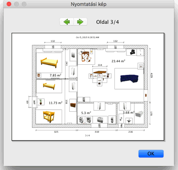

| Otthon kinyomtatása | |||
Otthon kinyomtatásához válassza a Fájl > nyomtatás menüt. A Sweet Home 3D alapbeállítások szerint kinyomtatja a bútorlistát, az alaprajzot, és az aktuális háromdimenziós nézetet, az alapértelmezett papírméretet, margókat és tájolást használva.
Az Oldalbeállítás panelen megváltoztathatja a papírméretet és a tájolást az Oldal formátum gombra kattintással. Azt is kiválaszthatja, hogy a bútorlista, az alaprajz, és a 3D nézet kinyomtatódjon-e. A nyomtatási kép megtekintéséhez válassza a Fájl > Nyomtatási kép menüpontot.  Az elõnézeti képen láthatja mi kerül az egyes oldalakon kinyomtatásra. A lapok között a lap tetején található nyilakra kattintással vagy a kurzornyilakkal válthat. |

|